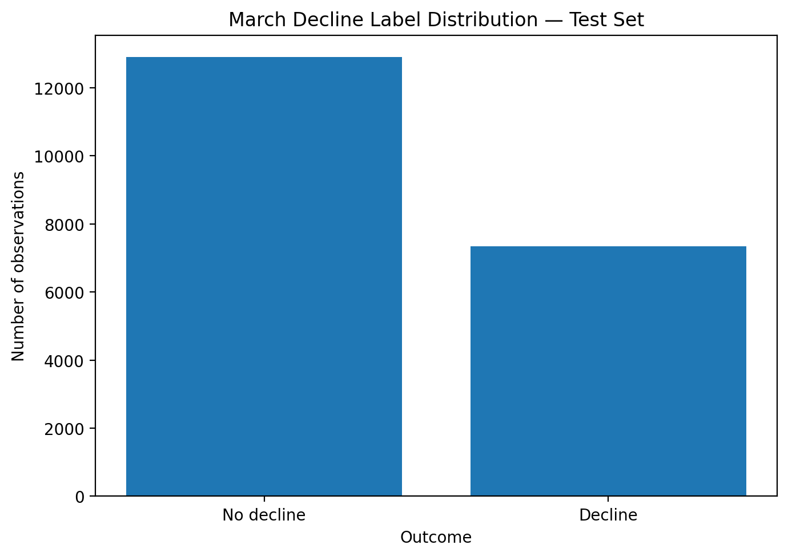
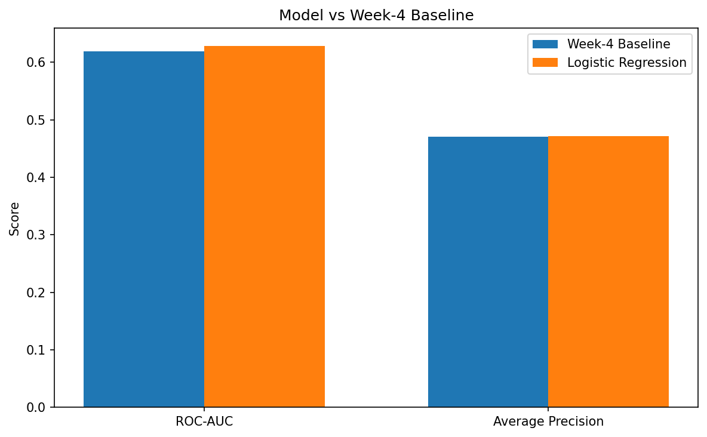
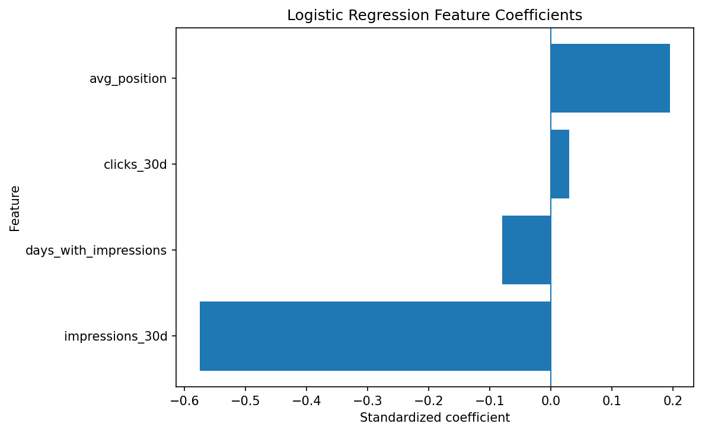
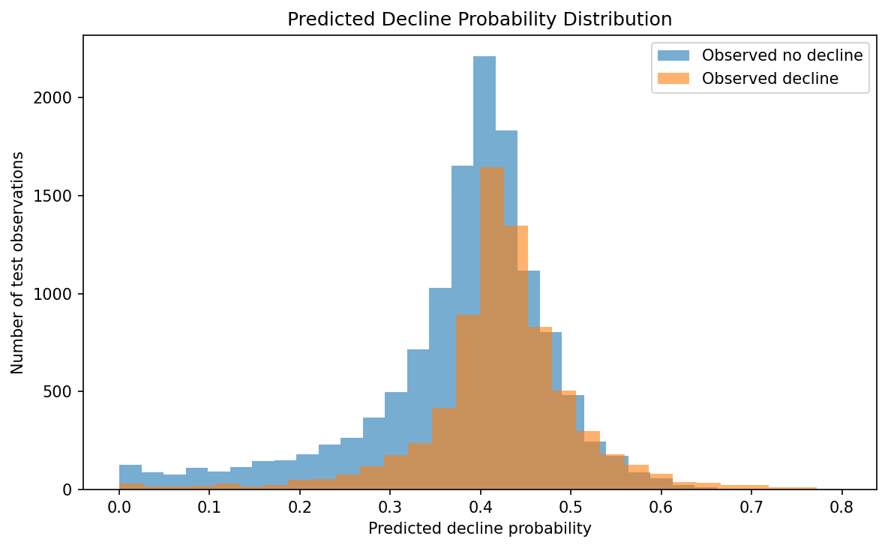

A decision-support study using anonymized search-performance data
This study evaluates whether a simple supervised learning model can help prioritize content pages for review when recent performance shows signals associated with future decline. The decision point is the end of February 2026. February performance signals are used as model features, while March performance is used only to define the outcome.
A Logistic Regression model is compared with a transparent rule-based baseline using a client-grouped train/test split. The model achieved a ROC-AUC of 0.6286 compared with 0.6194 for the baseline. Average Precision was 0.4721 for the model versus 0.4704 for the baseline.
The results indicate a small directional improvement in ranking ability, but not a large predictive advantage. The resulting scores are therefore best treated as a review-prioritization signal rather than a hard prediction or causal recommendation.
Can February search-performance signals identify pages that are more likely to experience a defined decline in March, so that an SEO or content team can prioritize which pages to review first?
The analysis uses the anonymized FlyRank internship warehouse hosted on Hugging Face. The February performance table contains approximately 7.36 million daily observations, covering February 1–28, 2026. The March table contains approximately 9.84 million daily observations, covering March 1–31, 2026.
The modeling table contains 55,090 client-content observations after constructing February features and requiring a positive February click baseline.
The final feature set contains four February-only signals:
impressions_30dclicks_30davg_positiondays_with_impressionsClient and content identifiers are retained for grouping and reporting but are not used as predictive features.

The decision point is February 28, 2026. Only information available by that point is used as a model feature.
An observation is labelled as a decline when March clicks fall below 70% of its February click baseline. This corresponds to a decline of more than 30%.
Logistic Regression was selected because the task is binary classification and the result needs to remain interpretable for a content-review queue. Numeric features are median-imputed using training data and standardized before fitting the model.
A grouped train/test split was performed by client. All observations belonging to a client remain entirely within either the training set or the test set.
The training set contains 34,860 observations and the test set contains 20,230. Client overlap between the two sets was zero.
The model uses only February-derived features. March clicks and the decline label are excluded from the feature matrix. The leakage check passed.
| Method | ROC-AUC | Average Precision |
|---|---|---|
| Week-4 baseline | 0.6194 | 0.4704 |
| Logistic Regression | 0.6286 | 0.4721 |
| Model minus baseline | +0.0092 | +0.0017 |

The Logistic Regression model improves ROC-AUC by 0.0092 over the transparent baseline. Average Precision improves by only 0.0017.
This is a small improvement, so the result should be interpreted as directional evidence that the learned ranking contains some additional signal rather than as a major predictive improvement.
At the 0.50 classification threshold, the model correctly classified 12,950 of 20,230 test observations. There were 6,420 false negatives and 860 false positives.
The large number of false negatives demonstrates why the model should not be treated as a hard yes/no decision system. Its more useful role is ranking pages by estimated decline probability.
The largest absolute Logistic Regression coefficient was associated with
impressions_30d, followed by avg_position.
Within this fitted model, lower February impression volume and weaker average
position were associated with higher estimated decline probability.

These are measured associations in this dataset. They do not establish that changing either variable would cause future performance to improve.
The model produces a ranked review queue using predicted decline probability. The highest-ranked pages should be treated as candidates for investigation rather than automatic refresh targets.
| Priority | Predicted probability | Priority band | Impressions | Clicks | Avg. position |
|---|---|---|---|---|---|
| 1 | 0.7989 | Highest | 112 | 1 | 81.12 |
| 2 | 0.7984 | Highest | 201 | 1 | 77.08 |
| 3 | 0.7815 | Highest | 149 | 1 | 76.46 |
| 4 | 0.7690 | Highest | 29 | 1 | 61.54 |
| 5 | 0.7635 | Highest | 43 | 1 | 64.54 |

Recommended workflow:
The analysis is implemented in the Capstone notebook under
work/notebooks/capstone.ipynb.
The analysis produced the following supporting artifacts:
The numerical results reported on this page are generated from the completed capstone notebook and its artifact outputs.
The experiment provides modest evidence that a Logistic Regression model using February search-performance signals can improve ranking of pages associated with the defined March decline compared with a transparent rule-based baseline.
The measured improvement is small, so the main practical value is not a claim of high prediction accuracy. Instead, the model provides an interpretable ranking signal that can help a content team decide where to begin a review queue.
The appropriate next step would be to test the approach across additional time windows and evaluate whether acting on the ranked recommendations produces useful downstream outcomes.